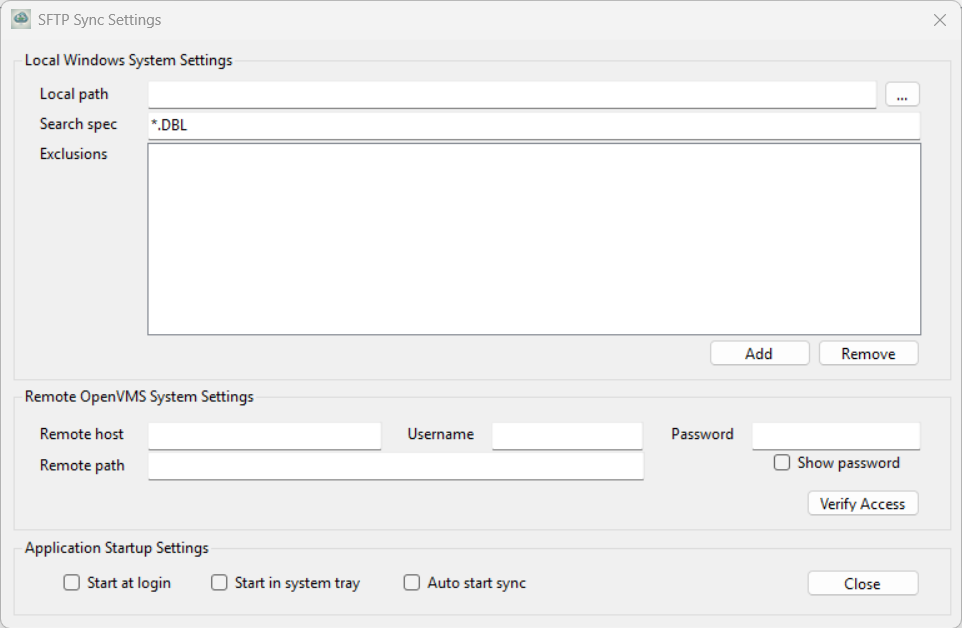

|
<Root level> Desktop Application |
Send comments on this topic |
The Windows Desktop application is provided in a program called SFTPSyncUI.exe which you can open via the Windows Start menu. When you start the application for the first time you sill see this:
Configuring Settings
To get started, go to the Tools menu and select Options. You will see a dialog like this:

Local Windows System Settings
This section of the dialog allows you to enter information about the directories and files on your local Windows system that you wish to synchronize to OpenVMS.
Local path
The local path identifies the local root directory to be replicated. All files in and below this directory that match the search spec (below) will be replicated to the remote OpenVMS system. You can use the ellipsis button (...) adjacent to the field to show a directory browser dialog to make it easy to pick a local directory. The value of the field should look like this:
C:\MYDEVFILES\MYPROJECT
Search spec
The search spec is a semi-colon delimited list of file patterns to be matched and replicated. For example if you want to replicate all files with DBL, DEF and INC file extensions to the remote system then your search spec would look like this:
*.DBL;*.DEF;*.INC
Exclusions
You can use the Add and Remove buttons to manage the list of directories to be excluded from the sync process, regardless of whether those directories contain any files that match the Search Spec file extensions. You should only add directories that are below the main Local Path directory.
Remote OpenVMS System Settings
This section of the dialog allows you to enter information about the OpenVMS system that you wish to replicate directories and files to.
Remote host
In this field you should enter the DNS name or TCP/IP address of the remote OpenVMS system to be accessed. For example:
VMSDEV1.MYDOMAIN.COM
or
10.1.1.15
Username
In this field you should enter the user name of the OpenVMS user account to be used to log in to the remote system. Note that OpenVMS usernames are not usually case sensitive, but in some cases can be, so make sure to enter a value appropriate for your system.
Password
In this field you should enter the password associated with the OpenVMS user account to be used to log in to the remote system. Note that OpenVMS passwords are not usually case sensitive, but in some cases can be, so make sure to enter a value appropriate for your system.
The value in the password field is normally hidden, but can be revealed by checking the Show password option.
The password you enter is stored in an encrypted form in the applications configuration file. The encryption used keys provided by the Windows operating system that are associated with the current Windows user account, and so can only be decrypted when logged into that account.
Verify Access
The Verify Access button allows you to verify the host and user credentials you have entered; it is enabled whenever those details change. When enabled, click the button to initiate a brief SFTP connection; a confirmation message will indicate whether the connection was successful. It is is not possible to initiate directory and file synchronization until the host and credentials have been verified.
Remote path
The remote path field is used to specify a path on the remote OpenVMS system that represents the root directory for the replicated files. The path must be expressed in Unix format, and to some extent depends on the configuration of your system. In many cases an OpenVMS path like DKA0:[MYUSER.DEVFILES.MYPROJECT] will be specified like this:
/DISK$DKA0/MYUSER/DEVFILES/MYPROJECT/
But your system may require something different. To determine the value of the remote path we recommend using an application such as WinSCP or FileZilla to make an SFTP connection to the system and user account, and then determine the path based on what you see in that application.
Application Startup Settings
Start at login
If the Start at login option is checked then each time you log in to your Windows user account, the SFTPSync desktop application will be started.
Start in system tray
If the Start in system tray option is checked then each time the SFTPSync desktop application starts it will start in the Windows System Tray. If not checked you will see the main window appear on your desktop.
Auto start sync
If the Auto start sync option is checked then each time the SFTPSync desktop application starts it will automatically begin synchronizing directories and files with the remote OpenVMS system, so long as all of the configuration options are specified and correct. If settings are missing, or remote information has not been validated, then synchronization will not begin automatically.
Completed Settings
Here is an example of a completed settings dialog:
Settings are saved immediately to the settings file which is named SFTPSync.json and is stored in your user accounts Documents folder. This is what the setting file for the settings above looks like:
Starting Synchronization
Having configured your settings and successfully verified remote access you can start synchronization to the remote system by using the File menu and selecting Start sync. If the option is disabled then you should review your configuration settings, as something is likely to be missing.
This is an example of what the main window looks like once the application has completed its initial synchronization and is ready to perform real-time synchronization of files.
Synchronization occurs in one direction only; changes to directories and files on the Windows system are re-created on the OpenVMS system, but changes on the OpenVMS system are NOT re-created on Windows. Also not that, for now at least, delete operations of either directories or files are not replicated to the remote VMS system. That may change in a later version.
Minimizing the Main Window
If configured, the application will start as a small icon in the Windows System Tray. In this case you can right-click on the icon and use the resulting context menu to show the main user interface, display the documentation, or exit the application.
Exiting the Application
Regardless of configuration options there are only three ways to exit from the application:
1.Right-click on the icon in the Windows System Tray and select the Exit option.
2.Log out of your Windows user account.
3.Close down the system.
Running Multiple Instances
This application does not support running multiple instances. If you attempt to start a second instance, the user interface of the original running instance will be shown.
The Message Log
The message log occupies the entire area of the main window. You will see status messages being displayed as the application replicates local file system changes to the remote system.
Copyright © 2025 Synergex International, Inc.